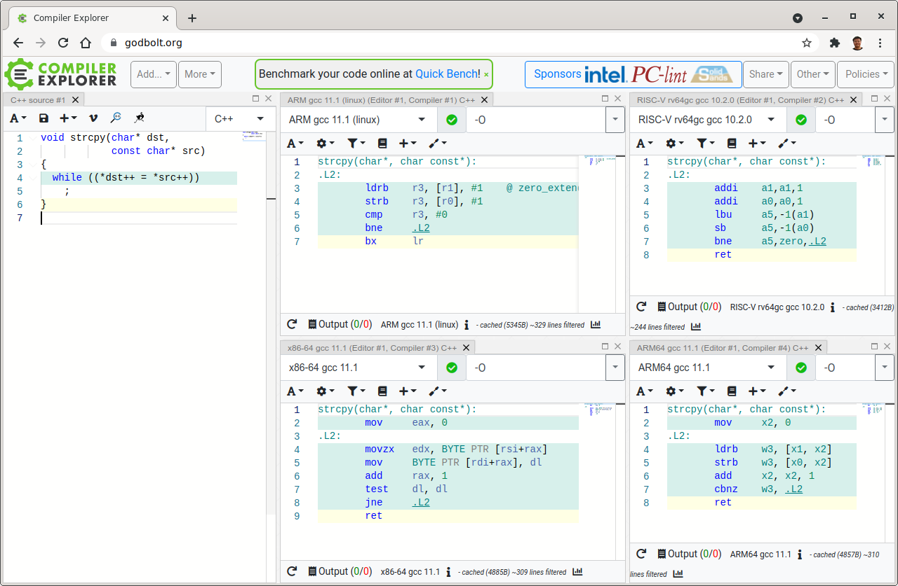
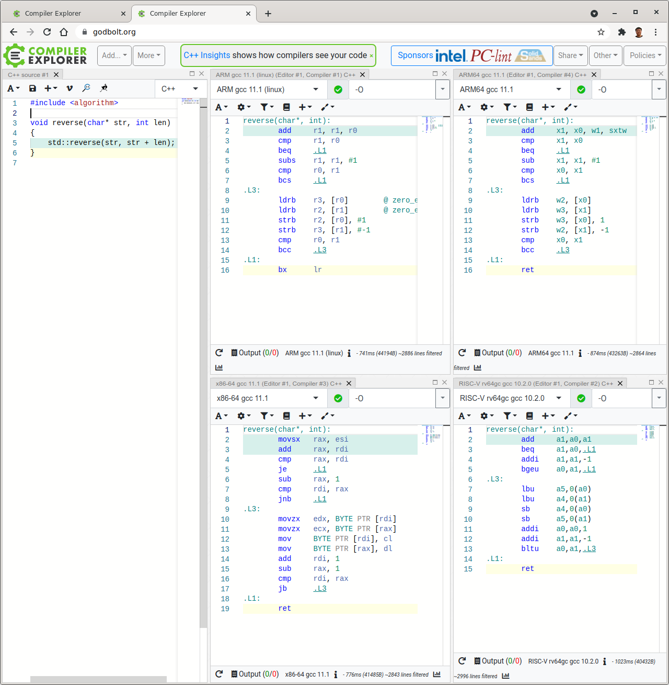

Links
-
42 Years of Microprocessor Trend Data by Karl Rupp

-
The Architecture of Open Source Applications
- Volumn I and II
- The Performance of Open Source Applications
- 500 Lines or Less
- Producing Wrong Data Without Doing Anything Obviously Wrong!
- Changing a seemingly innocuous aspect of an experimental setup can cause a systems researcher to draw wrong conclusions from an experiment. What appears to be an innocuous aspect in the experimental setup may in fact introduce a significant bias in an evaluation. (i) UNIX environment size, (ii) link order.
- Matthew Austern's list of publications
System programming
- Excuse me son, but your code is leaking !!! on Dan Walsh's Blog, about
FD_CLOEXECandO_CLOEXEC - Secure File Descriptor Handling by Ulrich Drepper, about
O_CLOEXEC,O_NONBLOCK. - A fork() in the road from HotOS '19.
Compiler
- Old school strcpy(3) on modern compiler. 
- std::reverse() a string on modern compiler. 
- Run 32-bit ARM binary on ARM64
Time-keeping
- The Science of Timekeeping HP Application Note 1289.
- GPS and Precision Timing Applications HP Application Note 1272.
- Leap Smear for applying leap seconds smoothly.
- Day of the weekday: Zeller's congruence, RFC3339
LZ77 and zlib
- http://zlib.net
- RFC1951
- Mark Adler's post: https://stackoverflow.com/questions/20762094/how-are-zlib-gzip-and-zip-related-what-do-they-have-in-common-and-how-are-they
- https://en.wikipedia.org/wiki/Canonical_Huffman_code
- https://jvns.ca/blog/2013/10/24/day-16-gzip-plus-poetry-equals-awesome/
- Dissecting the GZIP format
Unix history
- Evolution of the Unix System Architecture: An Exploratory Case Study, Video from FOSDEM'18 by Diomidis Spinellis.
- A repository of Unix History and evolution
Maths
- Theory and Applications of Markov Chains to Finance by Kevin Atteson
- Reed-Solomon by James S. Plank, also tutorials and SPE97